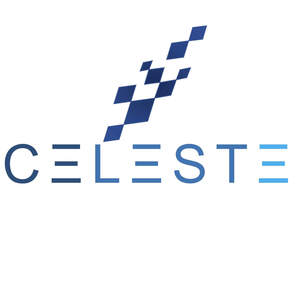

Trade Mark Journal No.2025/024 13 June 2025
UK00004177926 23 March 2025 (3)

- Class 3
- Skin care cosmetics; Exfoliants for the care of the skin; Essences for skin care; Skin care mousse; Skin care preparations; Skin care oils [cosmetic]; Skin care lotions [cosmetic]; Cosmetic creams for skin care; Skin care creams [cosmetic]; Milky lotions for skin care; Skin care oils [non-medicated]; Cleansing milks for skin care; Skin care (Cosmetic preparations for -); Cosmetic preparations for skin care; Skin care creams, other than for medical use; Skin care products for animals; Foot masks for skin care; Hand masks for skin care; Skin, eye and nail care preparations; Non-medicated skin care preparations; Perfumed oils for skin care; Wrinkle removing skin care preparations; Hair care creams; Horse oil cream for skin care; Body care cosmetics; Hair care lotions; Hair care serums; Hair care serum; Cosmetics for use in the treatment of wrinkled skin; Hair care creams [for cosmetic use]; Hair care lotions [for cosmetic use]; Beauty creams for body care; Hair care masks; Cosmetic products in the form of aerosols for skin care; Lotions for face and body care; Cosmetics for the treatment of dry skin; Skin moisturizers; Sun care lotions [for cosmetic use]; Sun care lotions; Skin moisturizer; Soaps for body care; Hair care agents; Cosmetics for protecting the skin from sunburn; Hair care preparations; Cosmetic hair care preparations; Facial care preparations; Cosmetic preparations for body care; Skin emollients; Skin lotions; Lotions for the skin; Skin moisturisers; Skin lotion; Deodorants for body care; Skin moisturiser; Skin make-up; Skin cleansers; Beauty care cosmetics; Preparations for the care of the body; Eye care products, non-medicated; Skin hydrators; Skin moisturizers used as cosmetics; Body cleaning and beauty care preparations; Skin creams; Creams for the skin; Oil baths for hair care; Skin lighteners; Skin cleansers [cosmetic]; Moisturizing preparations for the skin; Skin cleansing lotion; Cosmetic nail care preparations; Moisturising skin lotions [cosmetic]; Cosmetic creams for the skin; Skin creams [cosmetic]; Skin creams [for cosmetic use]; Non-medicated body care preparations; Skin balms [cosmetic]; Skin moisturizer masks; Cosmetic creams for dry skin; Skin relief serum [cosmetic]; Non-medicated skin serums; Oils for the skin; Colour cosmetics for the skin; Skin cream; Skin conditioners; Moisturising skin creams [cosmetic]; Sun care preparations for cosmetic use; Beauty care preparations.
CELESTEOFFICIAL LTD